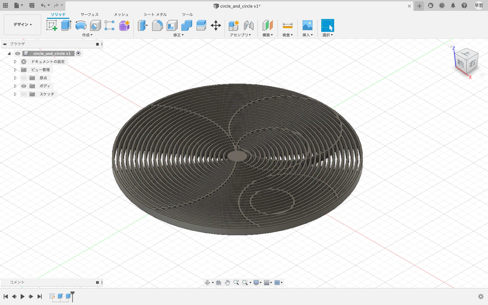
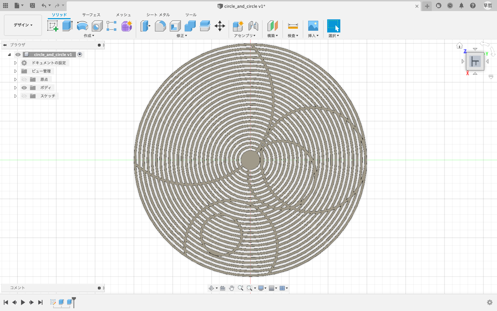

重ねたら綺麗に見えそうな円(7/25)
直径150mmの円から2.75mmずつ小さく直径をスケッチし、一つ飛ばしで押し出しした。 その円の中に円を加えることで模様のように見えるようになった。

上から見た図

印刷した(7/29)
印刷してわかったことは強度の強い部分と弱い部分がある点。 円周と模様の接点があるが、その接点から接点の距離を弧とすると、弧の長さが長いと強度が弱くなる。 （感覚的にも分かりやすいかもしれない） 最も弧が長い下の部分は指で押すと5mmほど凹ませることができる。 しかし、それほど心配のいらない問題だと思われるので一応この形は使えそう。